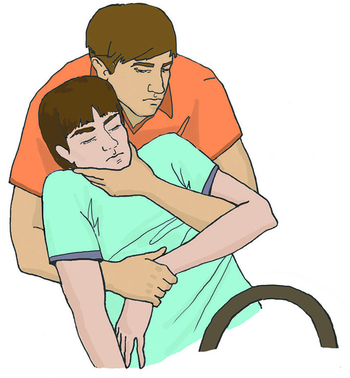
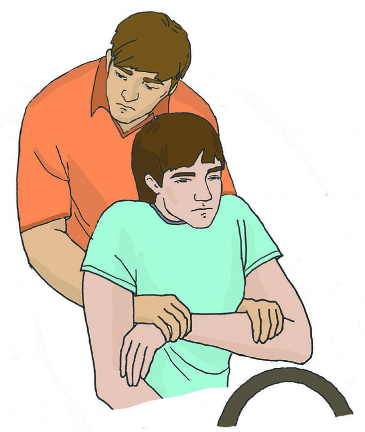

ДТП
Дорожно-транспортное происшествие (ДТП) — событие, возникшее в процессе дорожного движения с участием транспортного средства и повлекшее за собой повреждения транспортных средств, дорог, сооружений, грузов или иной материальный ущерб, а также причинение людям тяжёлых телесных повреждений и (или) их гибель.
Правила поведения при ДТП
Сохраняйте спокойствие – это позволит управлять машиной до последнего момента. Напрягите все мышцы и не расслабляйтесь до полной остановки. Постарайтесь уйти от встречного удара (например, съезжайте в кювет). Помните, что при столкновении с неподвижным предметом удар левым или правым крылом намного хуже, чем всем бампером.
Если столкновение не избежать постарайтесь прикрыть голову. Если машина едет на небольшой скорости – вдавитесь спиной в кресло и, напрягая все мышцы, упритесь руками в руль. Если скорость автомобиля превышает 60 км/ч, а вы не пристегнуты ремнём безопасности, то прижмитесь грудью к рулю.
Если вы едете на переднем пассажирском месте – закройте голову руками и завалитесь на бок, распростершись на сидении. Сидя на заднем сидении, постарайтесь, если есть возможность упасть на пол машины, в противном случае – прикройте голову руками и распластайтесь на сидении. Если с вами едет ребёнок – закройте его собой.
Дождавшись полной остановки транспортного средства, определите в каком месте автомобиля и в каком положении вы находитесь. Также проверьте: не горит ли автомобиль и не подтекает ли бензин.
Покиньте салон машины, если двери заклинило, то выбейте окно. Выбравшись, отойдите как можно дальше, так как возможен взрыв. Вызовите спасателей.
Алгоритм действий помощи при ДТП
Остановите автомобиль, включите аварийную сигнализацию и выставьте знак аварийной остановки. Вызовите экстренные службы.
По возможности выключите зажигание и отключите аккумуляторную батарею в повреждённом транспортном средстве, чтобы исключить возможность возникновения пожара и срабатывания подушек безопасности (если они не сработали при ударе). Аккумуляторную батарею необходимо отключать путём отсоединения сначала отрицательного провода, чтобы устранить вероятность искрового заряда, вызванного заземлением положительного контакта.
При необходимости, окажите первую помощь пострадавшим.
Если пострадавший не может покинуть автомобиль самостоятельно, необходимо наладить с ним контакт и контролировать его до прибытия спасателей. Извлечение пострадавшего из транспортного средства можно осуществить только при наличии угрозы для его жизни и здоровья и невозможности оказать первую помощь в условиях пребывания человека.
Если пострадавший в сознании поддерживайте с ним разговор, в ходе которого постарайтесь выяснить его самочувствие и жалобы. Если человек находится без сознания – периодически проверяйте его дыхание. Также периодически выполняйте осмотр пострадавшего на наличие начавшегося кровотечения. Кроме того, наблюдайте за обстановкой вокруг для своевременного устранения или избегания опасностей.
Извлечение пострадавшего
Если возникла ситуация, когда необходимо извлечь пострадавшего из транспортного средства, то данное действие осуществляется определённым образом.
Если человек находится в сознании: проведите руками под подмышками пострадавшего и, зафиксировав его предплечья, извлечь наружу.
Если пострадавший находится без сознания или есть подозрение на травму шейного отдела позвоночника, необходимо зафиксировать ему шею и голову. Одной рукой фиксируйте его нижнюю челюсть, а второй держите противоположное предплечье.
После извлечения переместите пострадавшего на безопасное расстояние.